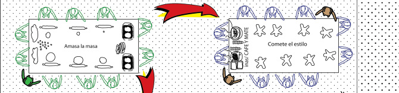
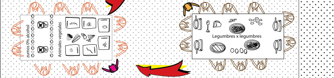
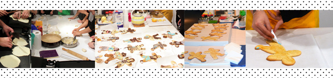
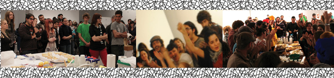

The experience that for me consolidate the art being as a body to eat with multitudes. In real time more than 50 people work in an art-kitchen with the purpose of share every effort and then... chew the results.

Un acto de creación colectiva con una de las excusas más cotidianas que se nos presenta a todos, el hambre y las ganas de comer. Tras años y años de que se presente mas o menos 3 veces al día la misma situación, no colectivizamos esta actividad salvo extraordinariamente, cuando podríamos desarrollar potencialmente el trabajo en grupo a través de ejemplos como este.

Way back